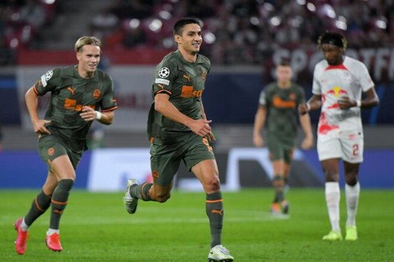
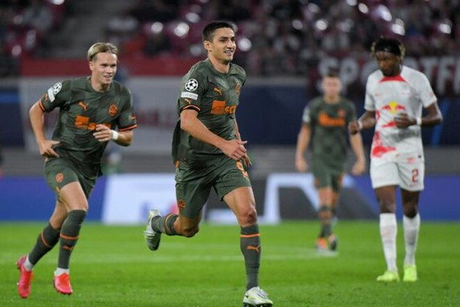

Порядок б'є клас. Шахтар видовищно розбив РБ Лейпциг


У Лейпцигу на полі стадіону «Ред Булл Арена» донецький «Шахтар» провів перший єврокубковий матч цього сезону. Суперником команди Ігора Йовічевіча були німецькі «бики», які за підсумками минулого сезону посіли четверте місце в Бундеслізі, а також дісталися півфіналу Ліги Європи УЄФА.
Як наслідок, авторитетний портал Transfermarkt оцінює орієнтовну середню вартість гравців «Лейпцигу» у 7 разів вище, ніж таку ж у «Шахтаря». Однак, як відомо, гроші у футбол не грають, а тому шанси у чемпіона України були, і донеччани зробили все можливе, щоб вивезти з Німеччини очки.
І поєдинок для підопічних Йовічевіча розпочався дуже вдало: вже на 16-й хвилині Мар'ян Швед після вдалого пресингу обікрав голкіпера господарів Петера Гулачі за межами штрафного майданчика, після чого залишалося лише точно пробити у порожні ворота з дальньої дистанції, з чим новачок «Шахтаря» без проблем упорався, ставши героєм першої половини матчу.
Другий тайм розпочався для «Шахтаря» невдало. «Лейпциг», як і очікувалося, намагався відігратися і на 57-й хвилині досяг свого. Сімакан на правому фланзі штрафного майданчика завершив передачу від Собослаї, розстрілявши ворота Анатолія Трубіна. Проте раділи взяттю воріт «бики» та їхні вболівальники недовго.
Вже наступної хвилини українська команда знову повела у рахунку. 25-річний Мар'ян Швед зібрав в одному поєдинку більше везіння, ніж за всю кар'єру до того. Якщо у ситуації з першим голом він, можна сказати, скористався подарунком від воротаря, то другий м'яч Мар'ян забив за допомогою рикошету від захисника. До речі, для Шведа це другий матч у Лізі чемпіонів, у першому він також відзначився голом, але тоді виступав за шотландський «Селтік» у кваліфікації турніру.
На цьому футболісти «Шахтаря» навіть не думали зупинятися. За 15 хвилин до кінця основного часу Михайло Мудрик змусив кусати лікті босів лондонського «Арсенала», які відмовилися задовольнити фінансові запити «Шахтаря». 21-річний вінгер точно пробив у правий кут після передачі від Георгія Судакова.
«Куди вже гірше», - могли спитати німецькі вболівальники після такого розвитку подій. Виявилося, що гірше може бути! Мудрик доповнив особистий актив ще одним асистом на Лассіну Траоре, який довів рахунок до розгромного.
4:1 – «Шахтар» стартував у Лізі чемпіонів із сенсаційної перемоги та очолив турнірну таблицю своєї групи. У паралельному поєдинку мадридський «Реал» виграв у шотландського «Селтіка» (3:0), з яким «гірники» зіграють наступного тижня в рамках другого туру.
| # | Команда | P | W | D | L | Goals | PTS |
|---|---|---|---|---|---|---|---|
| 1 | Шахтар Донецьк | 1 | 1 | 0 | 0 | 4:1 | 3 |
| 2 | Реал Мадрид | 1 | 1 | 0 | 0 | 3:0 | 3 |
| 3 | РБ Лейпциг | 1 | 0 | 0 | 1 | 1:4 | 0 |
| 3 | Селтік Глазго | 1 | 0 | 0 | 1 | 0:3 | 0 |
Ліги чемпіонів УЄФА. Груповий етап. Група F. 1-й тур.
«РБ Лейпциг» – «Шахтар» - 1:4
57 – Швед, 16, 58, Мудрик, 76, Траоре, 85
 61 – Конопля, 50, Трубін, 60, Джурасек, 89
61 – Конопля, 50, Трубін, 60, Джурасек, 89
«РБ Лейпциг»: Гулачі – Гальстенберг (Раум, 46), Орбан, Діалло, Сімакан – Шлагер (Генріхс, 70), Лаймер (Айдара, 82) – Нкунку, Собослаї – Вернер (Форсберг, 70), Сілва.
«Шахтар»: Трубін – Конопля, Матвієнко, Бондар, Тейлор – Степаненко (Кривцов, 86) – Мудрик, Судаков, Бондаренко (Джурасек, 62), Зубков (Траоре, 70) – Швед (Петряк, 62).
Арбітр: Жоау Педру Піньєйру (Португалія).
Стадіон: «Ред Булл Арена» (Лейпциг, Німеччина).
Удари (у площину): 12 (2) – 5 (4)
Кутові: 9 – 1
Офсайди: 2 – 0.